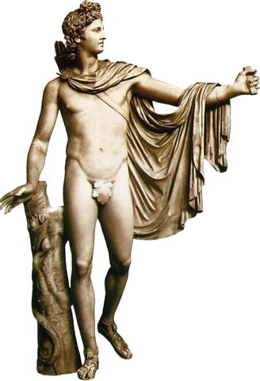

『
时空书简
』
望楼的阿波罗

阿波罗，女神勒托和宙斯的儿子。
是诸神中最能代表希腊民族精神的一位神祗。他掌管着光明、青春、医药、畜牧、音乐与诗歌。
如果说《米罗的维纳斯》是古希腊最完美的女性裸体神像的话，那么，《望楼的阿波罗》就是最完美的男性裸体神像。
“它几乎是所有古典作品的最高理想。啊，读者，将你的精神进入到这一美的化身王国里边吧。在那里，努力为你自己创造神圣自然的形象。”―[温格尔曼]
© copyright 哥舒